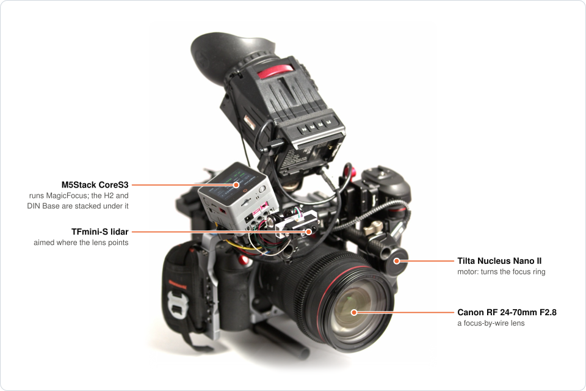
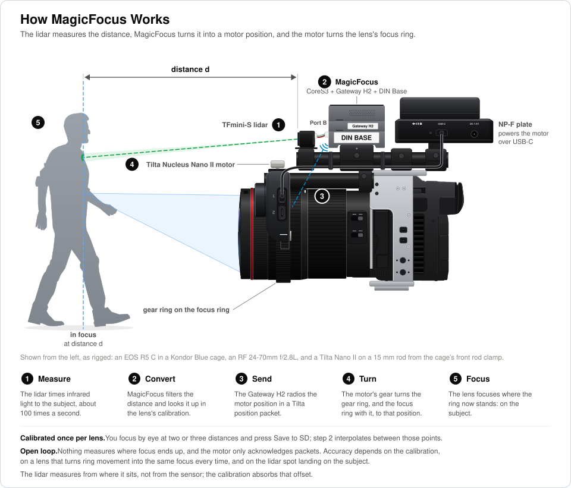
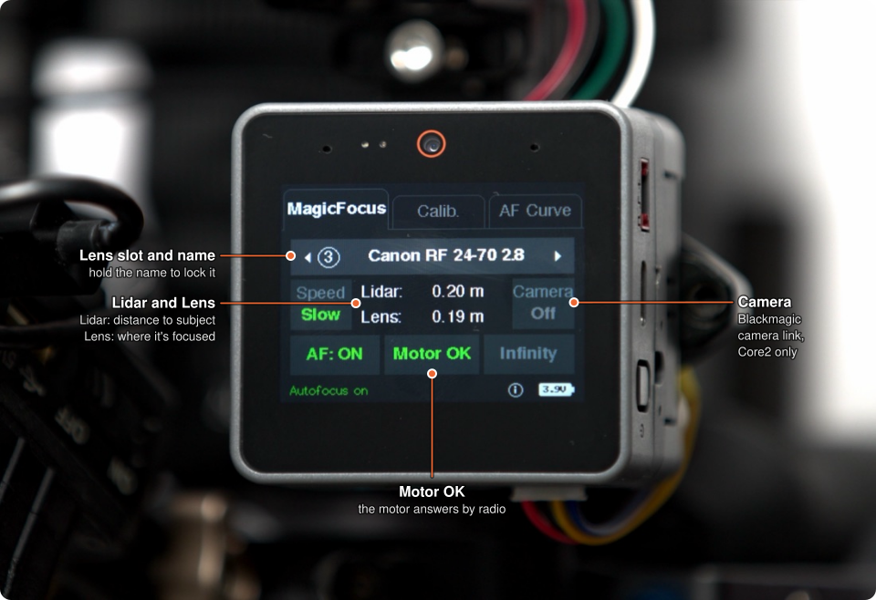
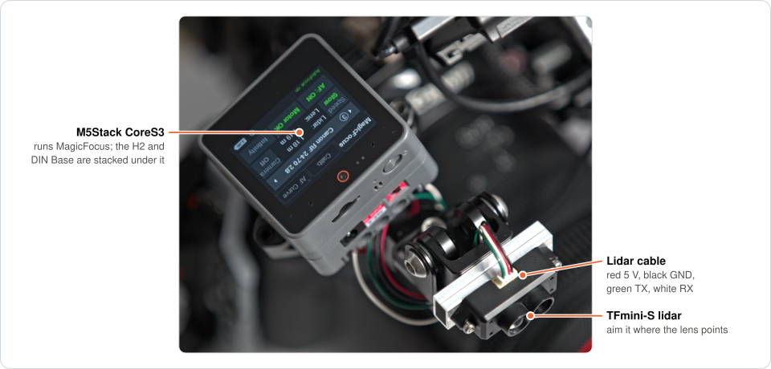

Why MagicFocus
🎚️ You choose how focus moves
Five autofocus curves, Snap, Overshoot, Creep, Smooth and Linear, each slow or fast, so a focus change looks the way the shot needs.
🎥 Any camera, almost any lens
The lidar measures the distance itself, so nothing connects to the camera. Focus-by-wire lenses work too, with one camera setting.
📡 The motor you already have
MagicFocus drives a stock Tilta Nucleus Nano II motor by radio, as its own hand wheel does: no modification, and no cable to the motor.
🧩 Off-the-shelf parts
An M5Stack CoreS3 or Core2, a Gateway H2 module and a TFmini-S lidar. A CoreS3 even flashes the H2 stacked on it.
🎯 Calibrated by eye, lens by lens
Focus each lens at a few distances with the camera's focus aids and save; MagicFocus interpolates between the points.
📈 You see what it does
A live graph of the lidar and lens distances, and a radio status that shows whether the motor is answering.
How it works

On the screen

Focus curves
On the AF Curve tab, choose how autofocus moves to each new distance. The Speed button makes every curve slow or fast.
| Curve | How focus moves to the new distance |
|---|---|
| Snap | Straight there in one move |
| Overshoot | A little past it, then back |
| Creep | Stops just short of it, then makes the last small move |
| Smooth | Glides there, easing in and out |
| Linear | Glides there at a constant speed |
Hardware
- Tilta Nucleus Nano II motor (WLC-T05-MK), with a follow-focus gear ring on each lens's focus ring
- Tilta Nucleus Nano II hand wheel ("The Knob") or Nucleus-N II Control Handle: needed once, to pair the motor
- M5Stack CoreS3 (recommended) or Core2, which runs MagicFocus
- M5Stack Module Gateway H2, the radio to the motor
- Benewake TFmini-S lidar
- microSD card for the lens list and calibration points
- Optional: the M5Stack DIN Base, for battery power, an on/off switch and ports for the lidar

Setting up
Steps 1 to 3 are done once, steps 4 and 5 for each lens. The setup guide has the details.
Frequently asked questions
Does MagicFocus need a connection to the camera?
No. The TFmini-S lidar measures the distance to the subject itself, and MagicFocus drives the focus motor by radio, so it works with any camera.
Which lenses work with MagicFocus?
Any lens that takes a follow-focus gear on its focus ring. Focus-by-wire lenses, such as Canon's RF lenses, work too once one camera setting is changed; see Focus-by-wire lenses.
Which focus motor does MagicFocus drive?
A stock Tilta Nucleus Nano II motor, by radio, the way its own hand wheel does. You need the Nucleus Nano II hand wheel or the Nucleus-N II Control Handle once, to pair the motor, and then switch it off.
What hardware do I need?
An M5Stack CoreS3 (recommended) or Core2, an M5Stack Module Gateway H2, a Benewake TFmini-S lidar, a microSD card, the Tilta Nucleus Nano II motor and a focus gear ring for each lens. The M5Stack DIN Base is optional.
How do I calibrate a lens?
Aim the lidar at a subject, focus it by eye with the camera's focus aids, and save the point on the Calib. tab. With two or more points saved, MagicFocus interpolates between them.
Is MagicFocus free?
Yes. MagicFocus is open-source firmware licensed under the LGPL-3.0.